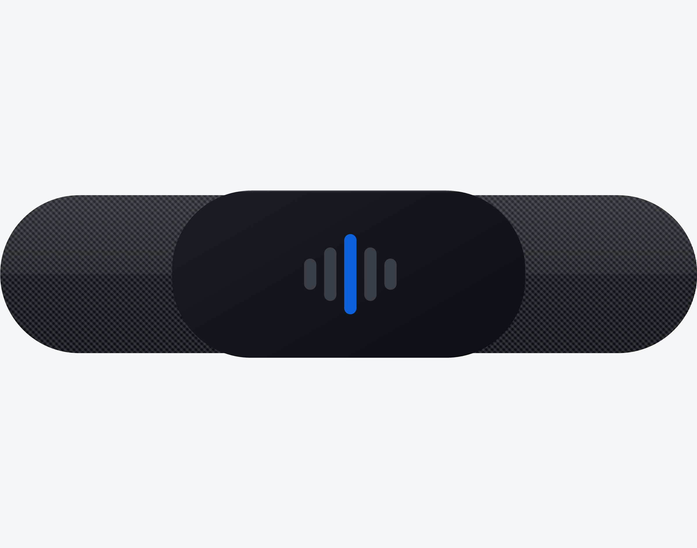

Production Blog
DIT3001 Design Project
Jan Singh · U1156156
Building TRACE
A production blog documenting the design, testing and iteration of a critical design fiction.
Before submitting: replace the dated headings with your actual working dates, drop your own screenshots into the marked placeholders, add your production management tool link and pre-production materials link, and confirm every reference is one you have genuinely read. Then delete this note.
Project Overview
What TRACE is
TRACE is a critical design fiction: a fictional but entirely believable personal wellness platform that monitors biometric and behavioural data in real time, including heart rate variability, mood, typing rhythm and voice sentiment, and translates it into plain-language insight that is encrypted and visible to the user alone. The project takes the form of a fully realised brand, comprising an identity system, a landing page, a typographic advertising campaign and physical packaging for a wrist-worn sensor, executed in the premium visual language of Apple and Whoop. TRACE is not a dystopia. It is a product people would genuinely want, and that is the argument.
Overview word count: approximately 110 words, per the task sheet requirement.
Entry 01 · Week 1
Concept
The argument before the artefact
TRACE is a critical design fiction, a fictional but entirely believable personal wellness platform that monitors your biometric and behavioral data in real time, your heart rate variability, your mood, your typing rhythm, and your voice sentiment. It translates them into clear, plain-language insight, encrypted and visible to you only. The project takes the form of a fully realized brand, which is an identity system, a landing page, a typographic advertising campaign, and physical packaging mockup for a wrist-worn sensor, all executed in the precise, premium visual language of Apple and Whoop.
Crucially, TRACE is not a dystopia, it is a coherent, desirable product that people would genuinely want, and that is the point. The critique is carried by seduction rather than warning and the brand is so polished, so caring, so credible that you want it before you catch yourself asking what it means to be understood completely. The typographic campaign carries this furthest stripped of imagery, each advertisement leaves you alone with the product's voice, where reassurance and intimacy sit closer together than is comfortable.
Drawing on my professional background in sales, the project deliberately deploys the real techniques of persuasion, which turns features into benefits, and anxiety into opportunity, so that anyone with marketing literacy recognizes the seduction as it happens and feels the unease that follows. If TRACE feels like a product you could buy today, that is the argument, and the culture that would happily embrace it is already here.
This positioning is grounded in the established view that design fiction works by building artefacts that provoke rather than predict, using the object itself as the site of the argument (Dunne & Raby 2013; Bleecker 2009). The subject matter draws on critical accounts of self-tracking culture and the commercial appetite for behavioural data (Lupton 2016; Zuboff 2019). The decision that TRACE must be desirable rather than frightening follows directly from that reading: a warning is easy to dismiss, whereas a product you catch yourself wanting implicates you.
Entry 02 · Week 2
Research
Benchmarking the language of premium wellness
Before designing anything I audited the visual and verbal conventions the fiction would need to inhabit convincingly. I looked closely at Whoop and Apple, along with a wider set of wellness and fitness brands, and recorded the patterns that recur across them:
Restraint as a trust signal. Near-white space, one accent colour, and almost no decoration. Visual quietness reads as clinical credibility.
Data rendered beautifully. Rings, waveforms and scores presented as aesthetic objects rather than raw numbers.
Second-person address. Copy speaks to one person, never an audience, and frames measurement as care.
Absence of the body. Bodies appear rarely, and when they do they are abstracted into signals.
That last pattern became the most useful finding. If the category already replaces the person with their data, then a brand that does so completely is not a leap into fiction, it is one honest step further. This is what made the seduction strategy viable rather than merely clever.
Insert your research board / benchmark screenshots here (Whoop, Apple, and the wellness brands you audited), with a short caption for each.
Entry 03 · Weeks 2 to 3
Identity
The pulse mark, and getting the wordmark wrong twice
The mark went through several rounds before it settled. The final form is five rounded bars of varying height with a single Olympian blue centre bar: a heartbeat rendered as data, and an audio-waveform silhouette that also reads as a voice, which matters because TRACE listens to voice sentiment. Building it from plain geometry rather than a drawn illustration meant it would survive any reproduction, from a favicon to an embossed box.
The wordmark took longer and taught me more. My first attempt set Inter Light with soft blue gradients bleeding into the T and the C, clipped inside the letterforms so the colour appeared to sit within the type. Reviewing it at small sizes I abandoned that entirely: the accents muddied the letterforms and fought the mark beside them. The lesson was that the blue had to mean one thing in the system, and if it appears in the mark it should not also decorate the type.
A second issue only appeared under measurement. The trademark symbol looked visibly detached from the final E. Inspecting the rendered geometry showed the wordmark's tracking was adding trailing space after the last letter, so the gap I was seeing was roughly nineteen units rather than the five I had specified. Correcting it required measuring the letterform's actual ink edge rather than its layout box.
Final primary lockup: the pulse mark with the Inter Light wordmark and trademark symbol, after the tracking correction.
The suite was then produced in the configurations a real brand needs: primary and reverse lockups, mark only, wordmark only, an app icon, and single-colour black and white versions for one-colour printing, embossing and embroidery.
Entry 04 · Week 3
Colour and Type
One accent, and a rule for using it
The palette was fixed at four values: near white (#F6F7F8), platinum (#9AA1A8), carbon (#0B0E12) and Olympian blue (#0C61DA). The governing rule matters more than the values: blue is never decoration, it always means signal. It appears on live data, on the pulse itself, and on a single call to action, and nowhere else. Enforcing that made the interface feel instrument-like rather than styled.
To document this I built a proportional usage bar showing roughly seventy per cent near white, fifteen per cent carbon, ten per cent platinum and five per cent Olympian. Showing the accent as a thin sliver communicates the discipline far more efficiently than a paragraph explaining it.
Typography uses two families. Inter carries the voice, light and large and human. Oswald annotates, small and uppercase and letterspaced, like the markings on a measuring instrument. Setting a clear hierarchy of display, wordmark, eyebrow, body and data label kept every subsequent artefact consistent without further decisions (Müller-Brockmann 1981).
Insert a screenshot of the colour section and the type specimen cards from your brand guidelines page.
Entry 05 · Weeks 3 to 4
Landing Page
Making the product look like it already ships
The landing page is a single scroll: a hero with a live dashboard, a "How It Works" section, a movement-tracking section, a dedicated privacy section, a pricing table and a footer carrying legal copy. Rather than mocking the interface as a flat image I built it as a working page, because motion is a large part of why the fiction reads as real. The recovery ring fills, the mood bar animates in, and the heart-rate line traces continuously.
The copy is where my sales background did the work. Every line is written the way this category actually writes:
Copy samples
"Your team won't notice a thing. That's the point."
"TRACE is built for you, not about you."
"Participation in wellbeing is not optional. TRACE is a benefit."
Each of these is written to be reassuring on the first reading and unsettling on the second. The legal copy in the footer is the clearest example, since it is where a real product hides the things it would rather you skimmed.
I also built a working checkout flow and a login with a private dashboard. Neither is required by the brief, but a fiction that cannot be clicked through is easier to dismiss, and the checkout in particular makes the product feel purchasable rather than illustrated.
Insert screenshots of the hero, the movement section, the privacy section and the pricing table.
Entry 06 · Week 4
Mentor Critique and Response
"Minimal is not a signature"
The most useful intervention in the project came from feedback on the work in progress. The point made was that my design was clean and minimal, but that minimalism alone does not distinguish a brand, and that there should be a rationale and a challenge that the design visibly overcomes. Three references were offered: the Spry interface, where a translucent voice prompt sits over a workout and feels as though it accompanies the user; the Brooks redesign, which uses texture drawn from maps and materials and pushes a timeline motif; and MoEngage, which uses colour, texture and layering to stay legible and friendly across many languages and cultures.
Sitting with that, I agreed with the criticism. TRACE was coherent but its restraint was generic premium, and it could have been almost any wellness brand. What each of the referenced projects had was a device that carried the product's core idea. I responded with two changes.
The pulse thread
A single thin signal line now runs down the full height of every page, drawing itself as you scroll, with a small ECG blip that beats gently at your position. It is the connective tissue of the whole site: continuous sensing rendered as one continuous line, always present and never loud. This gave me the rationale the feedback asked for. The challenge was to make continuous monitoring feel like calm care rather than clinical surveillance, and the answer was to let the signal itself become the brand's structure.
Woven texture
Following the Brooks logic of drawing texture from the product's own materials, I took the weave of the sensor's fabric strap and applied it as a near-subliminal crosshatch across every dark surface, at under two per cent opacity. You feel it more than you see it, and it ties the digital surfaces to the physical object.
Both changes were then rolled out across every page for consistency, which is what turned them from a homepage flourish into a system.
Insert a before and after screenshot showing the pulse rail and the woven dark sections.
Entry 07 · Week 5
Testing and Iteration
Three icon systems, tested side by side
The first icon set was accurate but visually busy, with a detailed keyboard, a face with eyes, and a running figure carrying more line work than the rest of the system. Rather than redraw them by instinct I built a comparison page and designed the same ten concepts three different ways, so they could be judged as systems rather than individually:
Direction
Approach
Assessment
A. Reduced
Same concepts, minimum marks, lighter stroke
Safest and most legible
B. One gesture
Each icon drawn as a single unbroken line
Best conceptual fit, but several became abstract
C. Pulse-bar language
Built only from the logo's rounded bars
Strongest brand ownership, but icons blurred together
Seeing them together made the decision obvious in a way that describing them could not. Direction C was seductive on paper but failed the basic test of an icon set, which is that ten icons must be distinguishable at a glance. I adopted Direction A as the base and then simplified individual icons one at a time against it, reducing the keyboard to three dots over a rule, the stairs to three ascending strokes, and the microphone to a single capsule and arc. The face, heart rate, HRV and privacy icons were left alone because they were already at their minimum.
Insert the three-direction comparison page and the final icon set.
Entry 08 · Week 5
Campaign
The typographic campaign
The advertising campaign strips away imagery entirely and leaves the viewer alone with the product's voice. Removing photography was a deliberate decision rather than a stylistic one: with no model to look at, there is nothing between the reader and the sentence, and the intimacy of the copy has nowhere to hide.
The voice rules I documented in the brand guidelines were written to make this repeatable. TRACE speaks quietly and with total certainty, in short sentences, with no hype and no exclamation marks, and it never congratulates, scolds, or asks what it already knows. To make that usable I wrote paired examples of what the brand says and what it never says, each pair rejecting a different failure mode: gym-brand hype, clinical alarm, goal-culture pressure, and defensive over-promising.
Insert your typographic campaign artboards here, with a caption for each line and the reasoning behind it.
Entry 09 · Week 6
Packaging
An object that behaves like a gift
TRACE ships as a small wrist-worn sensor in a matte white box carrying only a debossed pulse mark. Inside are the device, a welcome card and a short booklet titled "Your Wellbeing, Understood".
The booklet is where the fiction is at its most concentrated. It is written as a warm and reassuring welcome to a life of being continuously sensed, with pages titled "Always with you", "Nothing to perform" and "Yours alone". Lines such as "the picture of you is never a snapshot, it is a story, told in full" and "understanding you was never about improving you" are entirely at home in wellness marketing while carrying an unmistakable second meaning.

The wrist-worn sensor rendered at print resolution, showing the woven carbon strap that the brand's dark-surface texture is drawn from.
The band render was produced at 2400 pixels wide with the weave built from two opposing sets of diagonal threads and a soft sheen, so the material would read as fabric rather than a flat pattern when reproduced at print size.
Entry 10 · Week 6
Problem Solving
The brand guidelines would not paginate
Producing the guidelines as a print-ready document turned into the most technical problem of the project, and the most instructive.
The first exports had large blank areas: one page carried four small cards and two thirds of nothing. My initial diagnosis was that a rule forcing each section onto a new page was stranding short sections, so I removed it and let the content flow. The page count did not change. I then wrote a routine that measured every element and simulated where each page would break, which identified specific tall blocks that could not fit and were jumping whole to the following page. Trimming those reduced the reported whitespace substantially, and the export dropped from eight pages to six.
The document still had a large hole on the first page, and my measurements insisted it should not. The measurements were wrong. I built a probe file containing sixty blocks of a known height, exported it, and counted the pages, which told me that the usable height was two hundred millimetres rather than the two hundred and sixty-seven I had assumed. The export engine was rendering one CSS pixel as one point, so every element was landing on paper about one third larger than specified, and every calculation I had made was wrong by that factor.
With the true page height established, the remaining fault was structural rather than dimensional: the origin spread was a CSS grid, and a grid will not be placed into the space remaining on a page, so the entire block was moving to the next sheet. Setting it to stack in the print stylesheet allowed each panel to land where it fitted. A final adjustment of roughly thirteen millimetres, spread across the header, line spacing and one type size, brought the second panel up onto the first page.
Outcome
The document went from eight pages with substantial voids to five pages that fill properly. More usefully, the process is a clear record of iterative diagnosis: form a hypothesis, measure, discover the measurement itself is faulty, build an independent probe to establish ground truth, and only then fix the actual cause.
The honest lesson is that I spent several rounds optimising against a number I had assumed rather than verified, and the fastest correction came from a peer simply sending me a screenshot of the output. Direct observation beat my instrumentation.
Entry 11 · Week 7
Extension
From prototype to a working application
I first built a companion app as an interactive prototype, presented in a phone frame with four screens covering the day's readings, trends, movement and privacy. Its most deliberate detail is on the privacy screen, where the toggles for sharing data with an employer or an insurer are real controls that refuse to switch on and shake when pressed. The refusal is the product, and it is also the most loaded interaction in the build, since the app is proud of the one thing it will not do while already recording mood, typing and voice.
I then rebuilt it as a genuinely functional progressive web application, which can be installed to a home screen and works offline. Entries are stored on the device, the readiness score is a transparent calculation from sleep, energy and mood, and the export and delete functions genuinely work. The distinction matters for the fiction: the version that actually works can only know what you choose to tell it, and keeps it nowhere but your own device. It is the version that keeps the promise the fictional one makes.
Insert screenshots of the app prototype and the installed progressive web app.
Collaboration
Contributions and input
This is an individual project. All design, writing and production work is my own. The following records external input received during production, as required by the task sheet.
Feedback that minimalism alone is not a differentiator, with reference to Spry, Brooks and MoEngage. Directly produced the pulse thread and woven texture additions documented in Entry 06
[Peer name]
Peer review
Review of the exported guidelines document, identifying pagination faults that my own measurements had missed (Entry 10)
Fill in: replace the bracketed names with the actual people who gave you feedback, and add any others. If your peer input came from a studio session or forum, note the date and format.
Production management
Production was tracked using [your tool], available here: [link]. Pre-production materials developed in DIT3000 are available here: [link].
Fill in: the task sheet asks for a link to your production management tool and a link to your completed pre-production materials, acknowledging that they were sourced from DIT3000.
Final Reflection
What the project taught me
The central risk of this project was that a critical design fiction can fail in two opposite directions. If it is too obviously a warning it becomes a poster and nobody has to reckon with it, and if it is too seductive it becomes an advertisement for the thing it set out to question. TRACE had to be genuinely desirable and quietly wrong at the same time, and holding that tension was the hardest part of the work.
The clearest evidence that I was managing it badly came in the middle of production. At one point I rewrote the product as a sincerely private, confidential wellness platform in which the data really did belong to the user. The result was coherent and pleasant and completely toothless, because a product that keeps all its promises makes no argument. Returning to the design fiction framing while keeping the product's internal logic intact was the decision that rescued the project. The brief calls for something almost indistinguishable from reality, and that only works if the product genuinely makes sense on its own terms. Coherence is not the opposite of critique, it is the delivery mechanism for it (Dunne & Raby 2013).
The most valuable feedback I received was that minimalism is not a signature. I had mistaken restraint for identity, and produced something that was well executed but interchangeable with any number of wellness brands. The correction, which was to find a device that carries the product's core idea, produced the pulse thread and the woven texture, and both are now the elements I would point to first. That experience reframed how I read critique. The feedback was not asking for more decoration, it was asking what the design was arguing, and I could not answer that question at the time.
The production blog requirement also changed how I worked. Documenting the icon exploration forced me to build all three directions rather than defending my first instinct, and seeing them side by side made an unsuitable option obvious that I might otherwise have talked myself into. Testing produced a better outcome than taste alone would have.
The most uncomfortable lesson was technical. In producing the print-ready guidelines I spent several rounds refining a layout against a page height I had assumed rather than measured, and every conclusion I reached during that period was wrong by a third. I was measuring diligently and confidently, and I was confidently wrong. What broke the loop was an independent probe that established ground truth, and before that, a peer sending me a screenshot of what the file actually looked like. The professional habit I want to carry out of this is to verify the instrument before trusting its readings, and to seek direct observation early rather than treating it as a last resort.
If I were to continue the project I would push the typographic campaign furthest, because it is where the concept is most concentrated and least protected by craft. I would also want to test TRACE on viewers who do not know it is fiction, since the only real proof of the argument is whether someone reaches the pricing table before they start to feel uneasy.
Reflection word count: approximately 520 words, per the task sheet requirement.
References
Reference list
Bleecker, J 2009, Design fiction: a short essay on design, science, fact and fiction, Near Future Laboratory, Los Angeles.
Dunne, A & Raby, F 2013, Speculative everything: design, fiction, and social dreaming, MIT Press, Cambridge, MA.
Lupton, D 2016, The quantified self: a sociology of self-tracking, Polity Press, Cambridge.
Müller-Brockmann, J 1981, Grid systems in graphic design, Niggli, Sulgen.
Zuboff, S 2019, The age of surveillance capitalism: the fight for a human future at the new frontier of power, PublicAffairs, New York.
Important: only keep references you have actually read, and verify each entry against the UniSQ Harvard AGPS guide before submitting. Add references for the brands you benchmarked (Whoop, Apple, Brooks, MoEngage) and for any images you did not create yourself.